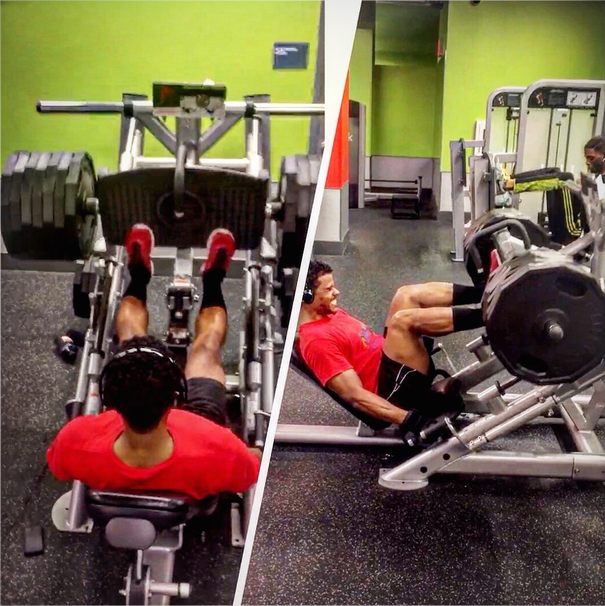
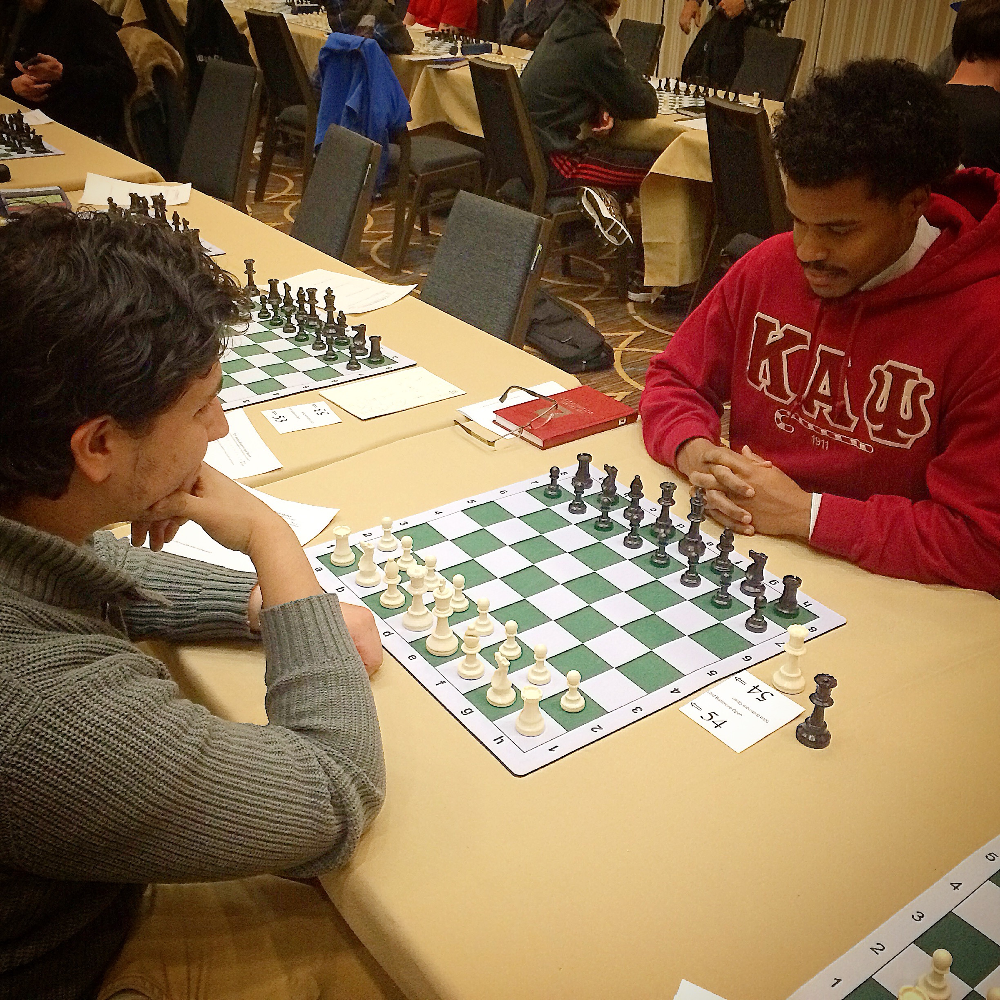
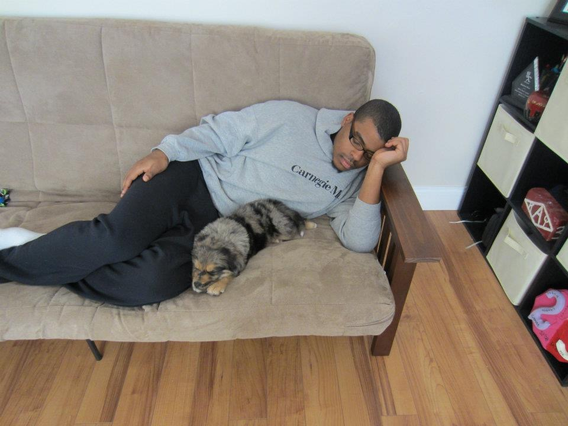
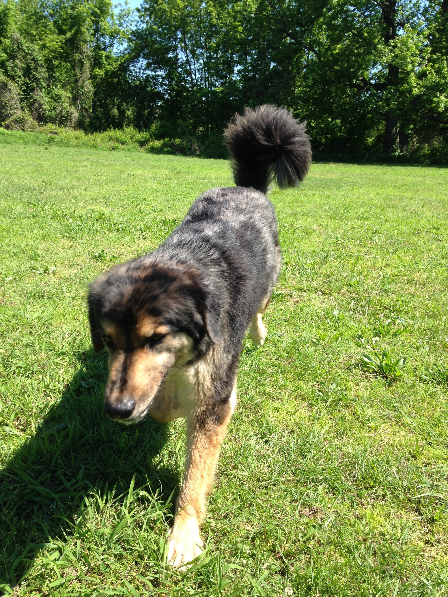
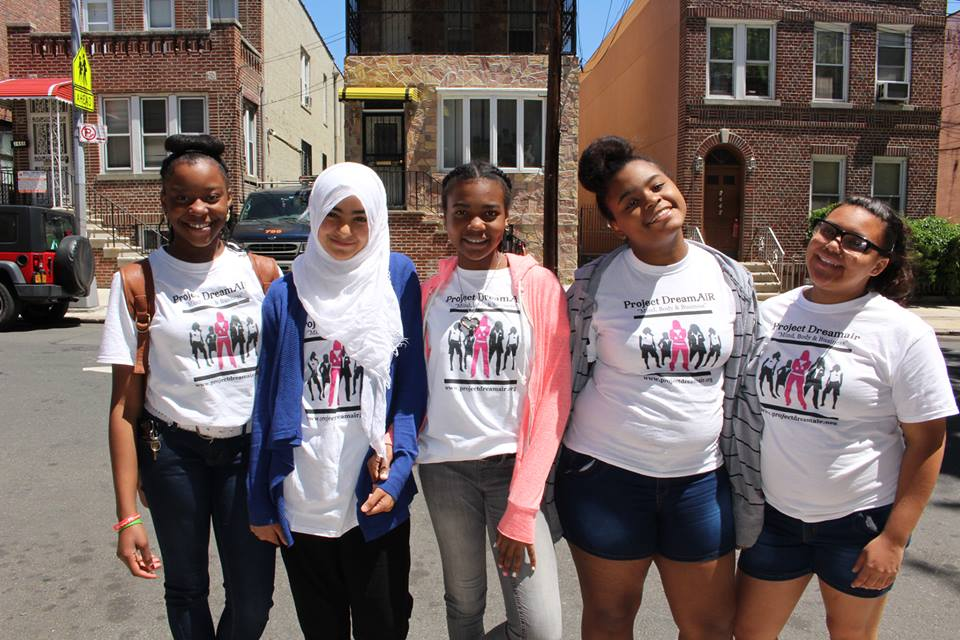
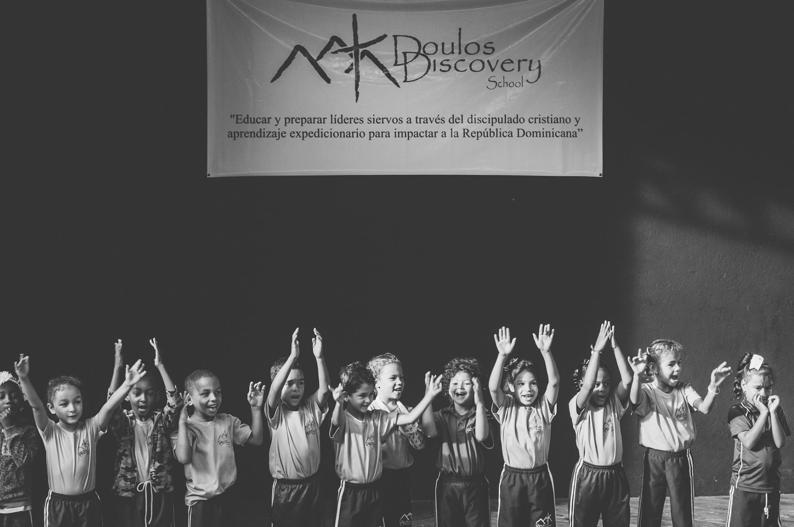

I'm a Dominican from the Bronx, New York, driven to learn, succeed, and, quite simply, be a better version of myself on a daily basis.
I went to All Hallows High School by Yankee Stadium and then out to Pittsburgh where I graduated from Carnegie Mellon University in 2011 with a B.S. in Information Systems.
I love not only what technology can do, but also having the power to, for example, either work for a Facebook or create the next one.
My favorite quote, at the moment, was said by Mahatma Gandhi:
"A man is but the product of his thoughts. What he thinks, he becomes."
Scroll down to learn more about me or how to Partner With Me for your web design, web development, or user experience needs.
Thanks for stopping by.
After working for a Wall Street firm and pursuing my education technology startup, I have a combined 5+ years experience in the tech field as a web designer, business analyst, project coordinator, user experience designer, full-stack web developer, and entrepreneur.
Languages: Ruby HTML CSS SASS JavaScript jQuery AJAX XML JSON XPATH
Databases: SQL PostgreSQL
Software/tools: Sinatra Ruby on Rails Git GithHub Bootstrap Rspec Capybara Factory Girl Axure ALM
IT Intern - Giant Eagle
Pittsburgh, PA (Summer 2009)
IT Intern - Freddie Mac
Washington, DC (Summer 2010)
Senior Associate, IT Leadership Development Program -
BNY Mellon
Pittsburgh, PA (June 2011 - March 2012)
Vice President, Wealth Management Technology - BNY Mellon
Pittsburgh, PA (March 2012 - October 2014)
Founder - Leksi Education
New York, NY (January 2014 - Present)
Ruby on Rails Apprentice - Launch Academy
Boston, MA (March 2015 - August 2015)
Senior Web Developer - Upwork
Worldwide (March 2016 - Present)
Code Instructor - New York Code + Design Academy
New York, NY (September 2016 - Present)
I hit the gym and run often to push myself physically, clear my mind, and, most importantly, so I can continue to eat like the fatty I am. 
I love the game of chess and compete in local and national tournaments. 
I have the coolest, handsomest, friendliest, activeest pup ever! His
name is Tre and he's a Border Collie/Australian Shepherd mix.


I serve on the Board of an awesome non-profit organization called Project Dreamair that empowers girls from the Bronx, New York to succeed, lead, and grow through wellness, mindfulness, and business. Get Involved or Donate. 
I also support Duolos Discovery School, which is based in Jarabacoa, Dominican Republic. Duolos' mission is to educate and equip servant leaders through Christian discipleship and expeditionary learning to impact the Dominican Republic. Get Involved or Donate. 